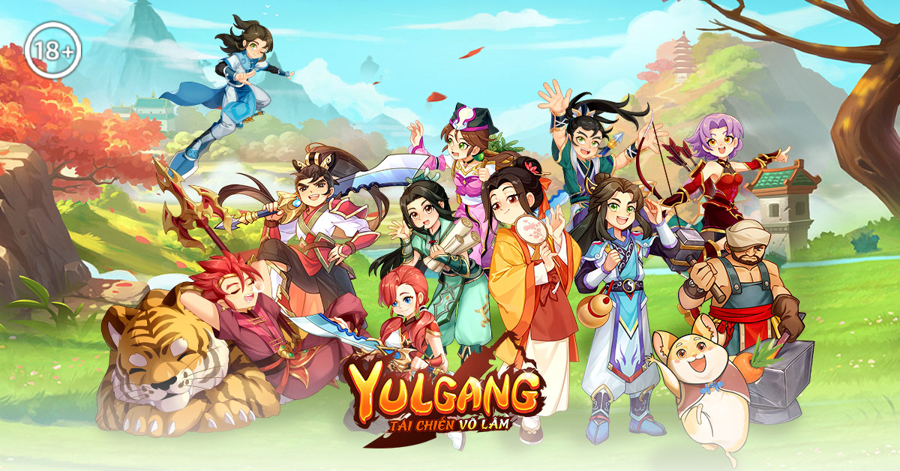

Yulgang: Tái Chiến Võ Lâm chính thức ra mắt hôm nay 13/3
Tải game Yulgang: Tái Chiến Võ Lâm ngay để nhận thú cưng linh thú Phi Vũ Thần Miêu và tham gia sự kiện tổ đội để săn siêu quà hấp dẫn.
Sau khoảng thời gian háo hức mong đợi, cuối cùng thì Yulgang: Tái Chiến Võ Lâm đã chính thức ra mắt vào hôm nay 13/3, sẵn sàng mang đến cho người chơi những trải nghiệm võ hiệp chuẩn nguyên bản, đúng như slogan "Phong khởi võ lâm, nghĩa khí trường tồn"
Như đã giới thiệu trước đó, Yulgang: Tái Chiến Võ Lâm là tựa game MMORPG võ hiệp được ủy quyền chính hãng từ bộ truyện tranh Hiệp Khách Giang Hồ. Game không chỉ tái hiện hoàn hảo các tính năng và gameplay kinh điển của phiên bản PC mà còn khắc họa một thế giới giang hồ đậm chất võ hiệp, nơi tình nghĩa huynh đệ và những trận huyết chiến chính tà luôn song hành.
Trong game, người chơi có thể hóa thân thành các nhân vật thuộc 5 môn phái: Kiếm Khách, Đao Khách, Thương Khách, Cung Thủ, Y Sư, cùng nhau ôn lại những ký ức hào hùng của chốn giang hồ và sát cánh bên huynh đệ đối mặt với những cuộc chiến không hồi kết.
Trước khi chính thức ra mắt, Yulgang: Tái Chiến Võ Lâm đã được đông đảo game thủ nhiệt tình chào đón. Minh chứng rõ nhất chính là số lượng người chơi đăng ký trước đã vượt mốc 1 triệu. Có thể thấy, sức hút của tựa game MMORPG võ hiệp phong cách chibi này đến bây giờ vẫn không hề giảm. Giờ đây, game đã chính thức ra mắt, chào đón người chơi tham gia vào thế giới giang hồ kinh điển với rất nhiều phúc lợi và sự kiện không thể bỏ lỡ.
Ngay khi người chơi tải game và gia nhập thế giới võ hiệp trong game sẽ ngay lập tức nhận được linh thú Phi Vũ Thần Miêu. Bạn sẽ không cảm thấy cô đơn trên hành trình bôn tẩu giang hồ rộng lớn.
Ngoài ra, người chơi chỉ cần đủ 18 tuổi trở lên và đăng nhập mỗi ngày trong suốt 7 ngày, người chơi sẽ sở hữu thêm nhiều gói quà hữu ích, bao gồm: Tiền tệ giang hồ, Bùa Cường Hóa May Mắn, Bùa Bảo Hộ, Bùa Tăng Cấp Tinh Thạch, giúp chế tạo ra những thần binh mạnh nhất để gia tăng thêm sức mạnh.
Bên cạnh lối chơi phong phú với hàng loạt hoạt động PVE, PVP, Yulgang: Tái Chiến Võ Lâm còn cung cấp thêm nhiều nhiệm vụ nhận thưởng khác. Điển hình như Nhiệm vụ Linh Thú, được mở trong giới hạn với 4 chương nhiệm vụ. Hoàn thành từng chương để nhận linh thú quý hiếm và mở khóa chương tiếp theo.
Tiếp theo đó là yêu cầu hoàn thành 6 nhiệm vụ tiêu diệt quái vật chỉ định mỗi ngày để nhận phần thưởng giá trị. Hơn nữa, sau khi người chơi gia nhập phe phái, có thể lựa chọn giữa hai con đường chính hoặc tà, sau đó chiến đấu với người chơi khác để tích lũy điểm và xếp hạng. Người chơi đạt thứ hạng cao sẽ nhận Lệnh Danh Vọng và Nguyên Thạch Thuộc Tính để gia tăng sức mạnh nhân vật.
Trong 7 ngày mở server, người chơi còn được nhận buff toàn server, giúp tăng cường các chỉ số, tăng tỉ lệ rơi trang bị, tăng kinh nghiệm nhận được, tăng tỉ lệ cường hóa trang bị thành công,… giúp người chơi tăng cấp nhanh hơn, đồng thời sớm có được trang bị mạnh vượt trội hơn người.
Nhờ đó, chặng đường đua Tổ đội đua cấp – đua TOP diễn ra từ 13/3 đến 23:59 ngày 23/3 hứa hẹn sẽ căng thẳng hơn bao giờ hết. Chắc chắn các tổ đội 5 người đăng ký tham gia sẽ được tiếp thêm nhiều động lực hoàn thành nhiệm vụ để nhận quà giá trị.
Sau khi game Yulgang: Tái Chiến Võ Lâm ra mắt, nhiều KOL đình đám cũng sẽ livestream trực tiếp, giới thiệu các tính năng nổi bật và đồng hành cùng người chơi trong sự kiện Tổ Đội Đua Cấp.
Đặc biệt, khi theo dõi livestream, người chơi sẽ nhận được mã quà tặng độc quyền từ từng KOL, bao gồm nhiều vật phẩm giá trị giúp hành trình bôn tẩu thêm phần thuận lợi.
Đừng bỏ lỡ cơ hội đồng hành cùng KOL và trải nghiệm những trận chiến giang hồ nghẹt thở cùng Yulgang: Tái Chiến Võ Lâm ngay hôm nay!
Trang sự kiện: https://yulgang-tangTổ đội chơi
Tải game: https://yulgangvn.onelink.me/muGv/obun2ffh